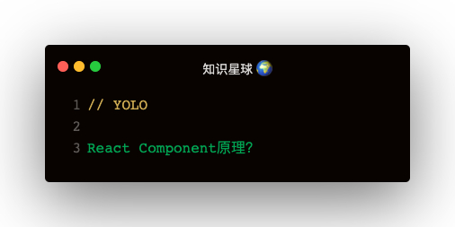

React中PureComponent的实现：
// 以下做的都是继承功能，让 PureComponent 继承自 Component
function ComponentDummy() {}
ComponentDummy.prototype = Component.prototype;
function PureComponent(props, context, updater) {
this.props = props;
this.context = context;
this.refs = emptyObject;
this.updater = updater || ReactNoopUpdateQueue;
}
const pureComponentPrototype = (PureComponent.prototype = new ComponentDummy());
pureComponentPrototype.constructor = PureComponent;
Object.assign(pureComponentPrototype, Component.prototype);
// 通过这个变量区别下普通的 Component
pureComponentPrototype.isPureReactComponent = true;